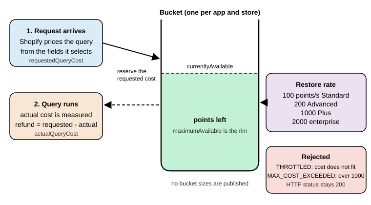

Admin GraphQL API
|
This content was generated with the assistance of AI and should be verified against the official documentation before being relied on in production. |
This page was written against the Shopify GraphQL Admin API version 2026-10 (the latest stable version, released on
2026-10-01), Shopify CLI 5.0.0, @shopify/admin-api-client 2.0.1 and @shopify/shopify-api 15.0.1, and checked on
2026-10-27. The 2027-01 release candidate is already published and is mentioned where it differs. The Admin API is the
main programmatic interface to a Shopify store for apps, integrations and scripts. Its throughput depends on the plan
of the store. The page covers the request format, versioning, queries and mutations, the cost-based
rate limits, pagination, error handling and idempotency, then the legacy REST Admin API and a migration path from REST to
GraphQL.
The running example is Pocket Coffee, the small specialty-coffee shop used across this section. It sells the product
"Single-origin beans" (three origins, three grinds and two sizes, 18 variants, SKUs such as PC-ETH-WHL-250) and a
"Starter kit" at 24.00 EUR, has a "Coffee Club" customer tag, and wants an integration that reads products, keeps
inventory in sync with a warehouse and tracks placed orders. Everything that needs a real store or a real token (calls
to https://<shop>.myshopify.com, query costs, rate-limit behavior) is documented from the official pages and was not
executed. What was executed offline is stated in the section on validation at the end of the page: every GraphQL
document and its variables were validated against the downloaded public Admin schema of each supported version, and the
pagination and throttling client was run against a local stand-in server.
What the Admin GraphQL API is
The GraphQL Admin API exposes the data and operations of the Shopify admin: products and variants, inventory, orders,
fulfillments, customers, discounts, metafields and metaobjects, files, webhooks subscriptions, bulk operations and
more. All operations go through one endpoint per shop and API version, as an HTTP POST:
https://{shop}.myshopify.com/admin/api/2026-10/graphql.jsonThe path has three parts that are easy to get wrong. /admin/ distinguishes it from the Storefront API, whose path is
/api/2026-10/graphql.json. The version segment (2026-10) pins the schema. {shop}.myshopify.com is the permanent
myshopify.com domain of the store, never a custom storefront domain. The official bulk-operation pages show Admin
examples with the Storefront-style path /api/{api_version}/graphql.json; the working Admin path is the one above.
The request body is JSON with a query string, and optionally variables (an object) and operationName. The
request must carry Content-Type: application/json, otherwise the API answers 400 Bad Request, and an access token
in the X-Shopify-Access-Token header.
| Part of the request | Meaning |
|---|---|
|
The only endpoint. Queries, mutations and introspection all use it. Queries are the equivalent of |
|
The access token of the app on that store. Which token and how it is obtained depends on the app type: Shopify-managed installation with token exchange for embedded apps, the authorization code grant for non-embedded apps, a client credentials grant for apps that act only on stores of the developer’s own organization. |
|
Required. A missing or wrong content type is one of the causes of |
|
Optional. Adds a per-field cost breakdown under |
|
The JSON body fields. Use variables for every dynamic value instead of building the query string by hand. |
The response has the standard GraphQL shape plus a Shopify extension: a data object, an optional errors array, and an
extensions.cost object that reports what the request cost (see the section on rate limits). Every response also
carries the header X-Shopify-API-Version, which names the version that actually served the request.
Access scopes
An app can only read or write the objects covered by the access scopes it was granted at installation. For the Pocket
Coffee integration the relevant scopes are read_products and write_products (products, variants, collections),
read_inventory and write_inventory (inventory items and levels), read_orders (orders), read_customers and
write_customers (customers) and read_metaobjects, write_metaobjects for metaobjects. Metafields follow the scope of
the resource that owns them.
By default read_orders and write_orders cover only orders created in the last 60 days. Older orders require
read_all_orders declared alongside read_orders or write_orders, and Shopify approval. Reading personal customer
data (name, email, address) from orders and customers is additionally subject to protected customer data requirements for
public apps. Scopes are declared in shopify.app.toml, as described in the page on authentication and access scopes
(Authentication and Access Scopes).
A request that needs a scope the app does not have is answered with HTTP 200 and an error whose
extensions.code is ACCESS_DENIED; do not branch on a 403 to detect a missing scope. On the GraphQL Admin API a
403 means the store has been marked as fraudulent. Starting on 2027-01-01 a request that presents the non-expiring
offline access token of a public app also receives 403, with the message Non-expiring access tokens are no longer
accepted for the Admin API.
Source: Shopify: access scopes
Ways to call the API
| Client | Use it for |
|---|---|
Admin client of the React Router app template ( |
The default for embedded apps scaffolded with |
|
Background jobs and webhook handlers that have no browser request, using the offline session stored for the shop. |
|
A small, framework-free GraphQL client for any JavaScript runtime. |
|
Server-side Node.js code that manages sessions itself. The Ruby gem |
Direct API access |
Code running inside the Shopify admin (app home pages, admin extensions) calls |
|
Run one query or mutation from the command line against a dev store ( |
|
Open an authenticated local GraphiQL explorer for an installed app and a store. |
cURL or any HTTP client |
Debugging and non-JavaScript integrations. |
Source: Shopify CLI: app execute
The CLI help of the installed Shopify CLI 5.0.0 (shopify app execute --help, shopify store execute --help) was read
and matches the flags listed above; the commands themselves need a login and were not executed.
The minimal request, with obvious placeholders for the shop and the token:
curl -sS -X POST "https://${SHOPIFY_SHOP}.myshopify.com/admin/api/2026-10/graphql.json" \
-H "Content-Type: application/json" \
-H "X-Shopify-Access-Token: ${SHOPIFY_ACCESS_TOKEN}" \
-H "Shopify-GraphQL-Cost-Debug: 1" \
-d '{"query":"query ShopInfo { shop { name myshopifyDomain currencyCode } }"}'The same operation from an embedded app built on the React Router template. The #graphql marker on the first line of
the template string is what the code generation tooling uses to find operations in source files.
import type { LoaderFunctionArgs } from "react-router";
import { authenticate } from "../shopify.server";
export async function loader({ request }: LoaderFunctionArgs) {
const { admin } = await authenticate.admin(request);
const response = await admin.graphql(
`#graphql
query ShopInfo {
shop { name myshopifyDomain currencyCode }
}`,
);
const { data } = await response.json();
return { shop: data.shop };
}API versioning
The Admin GraphQL API is versioned. A new version is released every three months at 17:00 UTC on the first day of the
quarter and is named YYYY-MM. Each stable version is supported for at least 12 months, and consecutive versions
overlap for at least nine months. The same quarterly cadence applies to the Storefront API, the Customer Account API, the
Function APIs, Webhooks and the Partner API; Liquid, OAuth endpoints, the Ajax API, App Bridge APIs and the Web Pixels
API are unversioned and may change at any time.
| Version | Released | Accessible until | Status on 2026-10-27 |
|---|---|---|---|
2025-04 |
2025-04-01 |
2026-04-16 15:00 UTC |
Unsupported |
2025-07 |
2025-07-01 |
2026-07-16 15:00 UTC |
Unsupported |
2025-10 |
2025-10-01 |
2026-10-16 15:00 UTC |
Unsupported |
2026-01 |
2026-01-01 |
2027-01-16 15:00 UTC |
Stable |
2026-04 |
2026-04-01 |
2027-04-16 15:00 UTC |
Stable |
2026-07 |
2026-07-01 |
2027-07-16 15:00 UTC |
Stable |
2026-10 |
2026-10-01 |
2027-10-16 15:00 UTC |
Latest stable |
2027-01 |
2027-01-01 |
2028-01-16 15:00 UTC |
Release candidate |
There are three kinds of version:
-
Stable: recommended for production and guaranteed not to change for its supported lifetime. Since 2025-04-01 Shopify also adds new enum values to older stable versions retroactively, which makes enums non-exhaustive: refresh cached introspection results periodically and give every switch over an enum a catch-all branch.
-
Release candidate: published on the same day as the stable release before it (the 2027-01 candidate appeared on 2026-10-01). It may still contain backward-incompatible changes and is meant for testing your app before the release, not for production.
-
Unstable (
unstablein the URL): updated continuously with in-progress changes that may be added or removed at any time. Use it only for early experiments.
Pin the version and watch for fall-forward
Always put an explicit version in the URL. When a request targets a version that is no longer accessible, Shopify does not
fail: it falls forward and answers with the oldest accessible stable version. A request to the retired 2025-10 is
therefore served by 2026-01 today, with a schema that may differ from the one the code was written for, and the
only signal is the response header. Check it in tests and in monitoring:
const response = await fetch(url, init);
const served = response.headers.get('X-Shopify-API-Version');
if (served !== '2026-10') {
console.warn(`Requested 2026-10 but Shopify served ${served}`);
}The versioning page spells the header X-Shopify-API-Version for API responses and X-Shopify-Api-Version on webhook
deliveries; HTTP header names are case-insensitive, so both are the same header for a client.
Official libraries pin the version for you. In the React Router template it is apiVersion: ApiVersion.October26 in
shopify.server.ts, and the same constant feeds the code generation configuration in .graphqlrc.ts
(shopifyApiProject({ apiType: ApiType.Admin, apiVersion: ApiVersion.October26, ... })). A version bump is therefore a
one-line change plus a regeneration of the types, and the compiler then reports every operation the new schema no longer
accepts. Other places that carry an API version in an app are the api_version of [webhooks] in shopify.app.toml,
the api_version of each extension in its shopify.extension.toml, and the version in any hand-written URL.
Deprecation and removal
When part of the API becomes unnecessary, unsafe or outdated it is deprecated in all supported stable versions at once
and announced in the developer changelog with migration guidance. It is removed in a subsequent release, for example
something deprecated in 2026-10 can be removed in 2027-01. Because versions overlap by at least nine months, there is
always time to migrate before removal. Deprecated fields carry the @deprecated directive in the schema, so
introspection and the explorer show them with a reason. In the 2026-10 schema, for example, the query
currentBulkOperation is deprecated in favor of bulkOperations, the mutation collectionAddProducts in favor of
collectionUpdate, productChangeStatus in favor of productUpdate and fulfillmentCreateV2 in favor of
fulfillmentCreate. The automaticDiscounts query is announced to be removed in 2027-01.
An entire API can be deprecated, not only fields; a deprecated API stays available but unsupported and may stop working at any time. Apps are warned through alerts in the Dev Dashboard, deprecation warnings in explorer tools, the changelog, the reference and, for imminent breaking changes, the emergency developer contact. Deprecated calls are attributed to the app whose access token made them, so do not reuse an app’s token in Postman collections or scripts: they raise alerts against the app. An app that keeps using unsupported resources after the upgrade deadline is delisted from the Shopify App Store, and users are blocked from installing it for at least seven days.
Source: Shopify developer changelog
Upgrade routine
A quarterly upgrade is mostly mechanical when the operations live in source files that tooling can see:
-
Read the release notes of the new version (Shopify: API release notes) for entries marked as requiring action.
-
Download the schema of the new version and validate every operation against it (the section on validation shows a complete script). Anything that fails to validate is a field or argument that was removed or renamed.
-
Change the version constant, regenerate types, fix compile errors, run the test suite.
-
Check the changelog for runtime behavior changes that a schema cannot reveal, such as the 2026-10 change that recalculates taxes when an order shipping address is updated.
-
Roll out, and compare
X-Shopify-API-Versionin the responses with the expected value.
Queries
A query starts at the fields of QueryRoot. The 2026-10 schema has 298 query root fields, 537 mutations and 3,708 types
in total. Three habits keep queries cheap and stable: name every operation, pass dynamic values as variables, and ask only
for the fields the code uses.
Reading the shop
query ShopInfo {
shop {
name
myshopifyDomain
currencyCode
plan {
displayName
}
}
}Source: Shopify: shop query
Global IDs
Objects are identified by global IDs, not by the numeric IDs of the REST API. A global ID has the form
gid://shopify/{ObjectName}/{id}, for example gid://shopify/Product/123. Some child objects need parameters, such as
gid://shopify/InventoryLevel/123?inventory_item_id=456. Treat a global ID as an opaque string that is built by
Shopify: store and pass it as returned and only construct one when migrating from a REST numeric ID (see the
migration section).
Every object that implements the Node interface can be fetched by ID through the root fields node(id:) and
nodes(ids:). Use inline fragments to select type-specific fields. nodes returns a list in the same order as the IDs,
with null for IDs that do not resolve.
query ProductAndVariants($productId: ID!, $variantIds: [ID!]!) {
node(id: $productId) {
id
... on Product {
title
handle
status
}
}
nodes(ids: $variantIds) {
id
... on ProductVariant {
sku
price
product {
title
}
}
}
}{
"productId": "gid://shopify/Product/1000",
"variantIds": [
"gid://shopify/ProductVariant/2000",
"gid://shopify/ProductVariant/2001"
]
}The ID values above are placeholders. The array argument ids follows the general limit that input arrays accept at most
250 items on every Shopify API.
Single objects by handle or custom ID
For products, variants, collections, customers and a few other types, a ...ByIdentifier root field looks an object up by
ID, handle or a unique metafield value, which saves a search round trip.
query ProductByHandle($handle: String!) {
productByIdentifier(identifier: { handle: $handle }) {
id
title
status
totalInventory
variantsCount {
count
}
options {
name
values
}
}
}{ "handle": "single-origin-beans" }Search, sort and filter
Connection root fields (products, productVariants, orders, customers, collections, inventoryItems, and so on)
accept a query string with Shopify’s search syntax, a sortKey enum specific to the connection, and reverse. The same
grammar is used by the REST query parameter, webhook delivery filters and the admin search box. The grammar in short:
| Feature | Syntax | Example |
|---|---|---|
Field search |
|
|
Comparators |
|
|
Boolean |
|
|
Grouping and phrases |
Parentheses and double quotes |
|
Prefix and exists |
|
|
Escaping |
Backslash before |
|
Source: Shopify: Search query syntax
Two behaviors cause silent bugs. A search on a field name that does not exist is ignored and the connection returns all
results, so a typo in a filter does not raise an error; schema validation cannot catch it because the query argument is
a plain string. And range searches on a large collection can time out or fail when the search field differs from the
connection sort key, in which case set sortKey to the field being searched.
query FindBeansVariant {
productVariants(first: 5, query: "sku:PC-ETH-WHL-250") {
nodes {
id
sku
price
inventoryQuantity
product {
id
title
}
}
}
}Source: Shopify: productVariants query
Orders show the date-range pattern, with the sort key matching the filtered field. This is the query Pocket Coffee uses to
reconcile the day’s orders. It needs the read_orders scope and returns only orders from the last 60 days unless the app
also has read_all_orders.
query RecentPaidOrders($since: String!) {
orders(
first: 50
query: $since
sortKey: CREATED_AT
reverse: true
) {
pageInfo {
hasNextPage
endCursor
}
nodes {
id
name
createdAt
displayFinancialStatus
displayFulfillmentStatus
currentTotalPriceSet {
shopMoney {
amount
currencyCode
}
}
}
}
}{ "since": "created_at:>=2026-10-01 financial_status:paid" }Source: Shopify: orders query
Customers are searched with tags in the same way. Reading email and other personal fields is protected customer data
for public apps. The Coffee Club members of Pocket Coffee (for example ada@example.test) are the customers with the
tag Coffee Club:
query CoffeeClubMembers($cursor: String) {
customers(first: 100, after: $cursor, query: "tag:'Coffee Club'", sortKey: NAME) {
pageInfo {
hasNextPage
endCursor
}
nodes {
id
displayName
email
tags
}
}
}Source: Shopify: customers query
Counts
Counts are separate root fields (productsCount, ordersCount, customersCount, productVariantsCount) that return a
Count object with a number and a precision. They accept the same query string and an optional limit. Counts are
accurate up to 25,000: for larger sets they return 25,001, which means "more than 25,000".
query ActiveProductCount {
productsCount(query: "status:active") {
count
precision
}
}Source: Shopify: productsCount query
Variables, fragments, aliases and directives
Standard GraphQL features work as in any server. Fragments remove repetition, aliases let one request fetch the same field
twice with different arguments, and the standard @include(if:) and @skip(if:) directives turn parts of the selection
on and off from variables. Besides the built-ins the schema defines @idempotent(key:) (see the section on
idempotency), @accessRestricted(reason:), which marks schema elements with restricted access, @deprecated(reason:)
and @oneOf, which marks input objects of which exactly one field must be supplied.
fragment VariantFields on ProductVariant {
id
sku
price
inventoryQuantity
}
query BeansWithOptionalVariants($withVariants: Boolean!) {
beans: productByIdentifier(identifier: { handle: "single-origin-beans" }) {
id
title
variants(first: 20) @include(if: $withVariants) {
nodes {
...VariantFields
}
}
}
kit: productByIdentifier(identifier: { handle: "starter-kit" }) {
id
title
}
}{ "withVariants": true }For the language itself (fragments, variables, directives, introspection, validation rules) see the GraphQL reference of this documentation, in particular Queries and Fields, Variables, Directives and Fragments, Pagination and Response and Error Handling.
Mutations and user errors
Mutations change data. Each mutation takes an input (an input object or arguments), returns a payload object and, almost
always, a userErrors list. The convention matters for error handling:
-
The response
errorsarray reports problems with the request as a whole: syntax or validation errors, missing scopes (ACCESS_DENIED), throttling (THROTTLED), query cost, internal errors. When it is present the operation usually did not run. -
userErrorsin the payload report business-rule failures of one mutation: a missing title, an unknown ID, a duplicate SKU. The request itself was valid and the HTTP status is200. Most payloads use theUserErrortype withfield(a path to the invalid input) andmessage; many mutations use a specialized type that adds acodeenum (ProductVariantsBulkCreateUserError,MetafieldsSetUserError,ProductSetUserError). Always selectuserErrors, withcodewhere the type has it, because a mutation that is not asked for itsuserErrorsfails silently. -
Mutations have a default cost of 10 points, and several (product mutations,
metafieldsSet) have dynamic costs.
Shopify also changes which problems surface as userErrors over time, for example productCreate started to return input
errors as userErrors instead of top-level errors in June 2025. Clients should check both places on every call.
Creating products
The product model has three tiers: the product, its options (such as origin or size, each with values) and its variants,
which are the purchasable combinations of option values and carry the SKU, price, barcode and inventory. The REST
endpoints that list, create, update and delete products have been deprecated since REST version 2024-04 in favor of this
model, and the old variant mutations productVariantCreate and productVariantUpdate no longer exist in the 2026-10
schema. The incremental mutations are
productCreate, productUpdate, productDelete, productOptionsCreate (and productOptionUpdate,
productOptionsReorder, productOptionsDelete), productVariantsBulkCreate, productVariantsBulkUpdate,
productVariantsBulkDelete and productVariantsBulkReorder. For an external system that is the source of truth the
declarative productSet replaces the whole state of a product in one call.
productCreate takes a product argument of type ProductCreateInput. It creates the product with one standalone default
variant unless productOptions are supplied. The Pocket Coffee "Starter kit" is a simple product: create it, then set the
price of its default variant with productVariantsBulkUpdate, exactly as the React Router app template does.
mutation CreateStarterKit($product: ProductCreateInput!) {
productCreate(product: $product) {
product {
id
handle
status
variants(first: 1) {
nodes {
id
price
}
}
}
userErrors {
field
message
}
}
}{
"product": {
"title": "Starter kit",
"handle": "starter-kit",
"vendor": "Pocket Coffee",
"productType": "Equipment",
"status": "DRAFT",
"tags": ["equipment", "kit"]
}
}Source: Shopify: productCreate mutation
mutation SetStarterKitPrice($productId: ID!, $variants: [ProductVariantsBulkInput!]!) {
productVariantsBulkUpdate(productId: $productId, variants: $variants) {
productVariants {
id
price
sku
}
userErrors {
field
message
code
}
}
}{
"productId": "gid://shopify/Product/1001",
"variants": [
{
"id": "gid://shopify/ProductVariant/2018",
"price": "24.00",
"inventoryItem": { "sku": "PC-KIT-001", "tracked": true }
}
]
}The IDs in the variables are placeholders: they would come from the productCreate response. productVariantsBulkCreate
and productVariantsBulkUpdate accept up to 2,048 variants per call, productVariantsBulkDelete up to 250. With
productVariantsBulkCreate the strategy argument controls the standalone default variant:
REMOVE_STANDALONE_VARIANT removes it so that all 2,048 slots are usable, while DEFAULT and PRESERVE_STANDALONE_VARIANT
keep it.
Syncing a whole product with productSet
"Single-origin beans" has three options and 18 variants. When the catalogue is maintained in a warehouse or PIM system,
productSet is the right mutation: it creates or updates the product and replaces the lists of options and variants with
exactly what is sent, and it changes only the scalar fields that are present. It takes an input of type
ProductSetInput, a synchronous flag and an optional identifier (ID, handle or custom ID) to update an existing
product. With synchronous: false it returns a productSetOperation to poll, which is how large products are handled.
mutation SyncBeans($input: ProductSetInput!, $synchronous: Boolean!) {
productSet(input: $input, synchronous: $synchronous) {
product {
id
handle
variantsCount {
count
}
}
productSetOperation {
id
status
}
userErrors {
field
message
code
}
}
}Source: Shopify: productSet mutation
The variables are generated from the catalogue definition rather than typed by hand. The script below builds the 18
variants, the SKUs (PC-<ORIGIN>-<GRIND>-<SIZE>) and the prices of the running example: 8.90 for 250 g and 29.90 for 1 kg,
plus 1.00 per 250 g for Ethiopia (9.90 for 250 g and 33.90 for 1 kg).
const origins = [['ETH', 'Ethiopia Yirgacheffe'], ['COL', 'Colombia Huila'], ['BRA', 'Brazil Cerrado']];
const grinds = [['WHL', 'Whole bean'], ['ESP', 'Espresso'], ['FIL', 'Filter']];
const sizes = [['250', '250 g', 8.9, 250], ['1KG', '1 kg', 29.9, 1000]];
const warehouse = 'gid://shopify/Location/9000'; // placeholder location ID
const variants = [];
for (const [o3, origin] of origins) {
for (const [g3, grind] of grinds) {
for (const [s, size, base, grams] of sizes) {
const surcharge = o3 === 'ETH' ? (grams / 250) * 1.0 : 0;
variants.push({
optionValues: [
{ optionName: 'Origin', name: origin },
{ optionName: 'Grind', name: grind },
{ optionName: 'Size', name: size },
],
price: (base + surcharge).toFixed(2),
inventoryItem: {
sku: `PC-${o3}-${g3}-${s}`,
tracked: true,
measurement: { weight: { value: grams, unit: 'GRAMS' } },
},
inventoryQuantities: [{ locationId: warehouse, name: 'available', quantity: 40 }],
});
}
}
}
export const variables = {
synchronous: true,
input: {
title: 'Single-origin beans',
handle: 'single-origin-beans',
vendor: 'Pocket Coffee',
productType: 'Coffee',
status: 'ACTIVE',
productOptions: [
{ name: 'Origin', position: 1, values: origins.map(([, n]) => ({ name: n })) },
{ name: 'Grind', position: 2, values: grinds.map(([, n]) => ({ name: n })) },
{ name: 'Size', position: 3, values: sizes.map(([, n]) => ({ name: n })) },
],
variants,
},
};This script was run, and its output validated against the 2026-10 schema as the variables of the SyncBeans mutation:
18 variants, SKUs from PC-ETH-WHL-250 to PC-BRA-FIL-1KG, and ProductSetInput accepted every field. The first two
variant entries of the generated document are:
{
"synchronous": true,
"input": {
"title": "Single-origin beans",
"handle": "single-origin-beans",
"vendor": "Pocket Coffee",
"productType": "Coffee",
"status": "ACTIVE",
"productOptions": [
{ "name": "Origin", "position": 1, "values": [{ "name": "Ethiopia Yirgacheffe" }, { "name": "Colombia Huila" }, { "name": "Brazil Cerrado" }] },
{ "name": "Grind", "position": 2, "values": [{ "name": "Whole bean" }, { "name": "Espresso" }, { "name": "Filter" }] },
{ "name": "Size", "position": 3, "values": [{ "name": "250 g" }, { "name": "1 kg" }] }
],
"variants": [
{
"optionValues": [
{ "optionName": "Origin", "name": "Ethiopia Yirgacheffe" },
{ "optionName": "Grind", "name": "Whole bean" },
{ "optionName": "Size", "name": "250 g" }
],
"price": "9.90",
"inventoryItem": { "sku": "PC-ETH-WHL-250", "tracked": true, "measurement": { "weight": { "value": 250, "unit": "GRAMS" } } },
"inventoryQuantities": [{ "locationId": "gid://shopify/Location/9000", "name": "available", "quantity": 40 }]
},
{
"optionValues": [
{ "optionName": "Origin", "name": "Ethiopia Yirgacheffe" },
{ "optionName": "Grind", "name": "Whole bean" },
{ "optionName": "Size", "name": "1 kg" }
],
"price": "33.90",
"inventoryItem": { "sku": "PC-ETH-WHL-1KG", "tracked": true, "measurement": { "weight": { "value": 1000, "unit": "GRAMS" } } },
"inventoryQuantities": [{ "locationId": "gid://shopify/Location/9000", "name": "available", "quantity": 40 }]
}
]
}
}Source: Shopify: ProductSetInput
Because productSet replaces list fields, omitting a variant that exists in the store deletes it. That is the intent when
the external system is the source of truth, and the main pitfall otherwise: for targeted edits use the incremental
mutations. The cost of productSet is dynamic (10 points, plus 0.2 per variant, 0.6 per variant file, 0.4 per metafield
and 1.9 per product file), so by the published formula the Pocket Coffee product costs 10 + 18 x 0.2 = 13.6 points; this is
a calculation from the formula, not a measured value. The mutation supports up to 2,048 variants on every plan.
Metafields
The roast date shown by the "Roast date badge" of Pocket Coffee is a product metafield, custom.roast_date of type
date. metafieldsSet writes up to 25 metafields in one call (with a total payload of at most 10 MB), creating or updating each
by owner, namespace and key. The operation is atomic: if one metafield is rejected, none is persisted. Since 2024-07 it
supports compare-and-set: pass the compareDigest of a previously read metafield and the value is only written if the
stored one still matches, or pass null to write only when the metafield does not exist yet. Since 2026-09-15 the cost of the
mutation is 10 points plus a weight for every distinct owner resource, so batch writes by owner rather than sending one
call per metafield.
mutation SetRoastDate($metafields: [MetafieldsSetInput!]!) {
metafieldsSet(metafields: $metafields) {
metafields {
id
namespace
key
value
type
}
userErrors {
field
message
code
}
}
}{
"metafields": [
{
"ownerId": "gid://shopify/Product/1000",
"namespace": "custom",
"key": "roast_date",
"type": "date",
"value": "2026-10-20"
}
]
}Source: Shopify: metafieldsSet mutation
Metafield definitions, metaobjects and how a theme reads these values are covered in the page on metafields and metaobjects (Metafields and Metaobjects).
Tags
Tags are added and removed with tagsAdd and tagsRemove, which take the global ID of a resource that supports tags
(for example a product, an order or a customer; a resource that does not support tagging returns a resource-not-found
error). Adding the Coffee Club tag is how Pocket Coffee enrolls a
customer in the club:
mutation EnrollCoffeeClub($id: ID!, $tags: [String!]!) {
tagsAdd(id: $id, tags: $tags) {
node {
id
}
userErrors {
field
message
}
}
}{ "id": "gid://shopify/Customer/3000", "tags": ["Coffee Club"] }Source: Shopify: tagsAdd mutation
Inventory
Inventory is a separate object graph: a variant has an InventoryItem, which has an InventoryLevel at each location
with quantities by name (available, on_hand, committed, and so on). To set an absolute quantity, use
inventorySetQuantities; for a relative change use inventoryAdjustQuantities. Both require the write_inventory
scope and, since API version 2026-04, the @idempotent directive (see the next section). inventorySetQuantities takes a
reason, the quantity name and a list of quantities; each entry names an inventoryItemId, a locationId and the
new quantity.
mutation SetBeansStock($input: InventorySetQuantitiesInput!, $idempotencyKey: String!) {
inventorySetQuantities(input: $input) @idempotent(key: $idempotencyKey) {
inventoryAdjustmentGroup {
id
reason
changes {
name
delta
}
}
userErrors {
field
message
code
}
}
}{
"idempotencyKey": "3f5b6ebf-143c-4da5-8d0f-fb8553bfd85d",
"input": {
"name": "available",
"reason": "correction",
"referenceDocumentUri": "logistics://pocket-coffee/stocktake/2026-10-27",
"quantities": [
{
"inventoryItemId": "gid://shopify/InventoryItem/4000",
"locationId": "gid://shopify/Location/9000",
"quantity": 36,
"changeFromQuantity": 40
}
]
}
}As of 2026-04, changeFromQuantity is mandatory on every entry of quantities: the mutation only updates a quantity when
the stored value equals changeFromQuantity (a compare-and-swap) and otherwise returns the user error
CHANGE_FROM_QUANTITY_STALE, instead of overwriting a concurrent change. Passing null explicitly skips the check, which
is acceptable only when the integration is the single source of truth for that stock; omitting the field is an error.
The field is already accepted by the 2026-01 schema, so the same document works on all supported versions.
Updating a product
productUpdate takes a product argument (type ProductUpdateInput) that carries the id, and an optional identifier
argument to address the product by handle or custom ID instead. Older examples, including one on the official Global IDs
page, still show the pre-2024-04 form with an input argument; that form is rejected by the 2026-10 schema, as the
validation section shows.
mutation PublishBeans($product: ProductUpdateInput!) {
productUpdate(product: $product) {
product {
id
status
updatedAt
}
userErrors {
field
message
}
}
}{
"product": {
"id": "gid://shopify/Product/1000",
"status": "ACTIVE",
"tags": ["beans", "single-origin"]
}
}Source: Shopify: productUpdate mutation
Cleanup and scale
Webhook subscriptions can be created with webhookSubscriptionCreate (and listed with webhookSubscriptions), but apps
should declare them in shopify.app.toml, which is covered in the page on webhooks and events
(Webhooks and Events). For reading or writing more than a few thousand
objects, use the bulk operations bulkOperationRunQuery and bulkOperationRunMutation, which are not subject to the
single-query cost limit (Bulk Operations).
Cost-based rate limits
The GraphQL Admin API does not count requests: it charges every query a number of points, the calculated query cost, against a leaky bucket that belongs to the combination of one app and one store. Calls from one app do not affect another app on the same store, and calls to one store do not affect the same app on another store.

The restore rate depends on the plan of the store:
| Plan | Restore rate |
|---|---|
Standard |
100 points per second |
Advanced Shopify |
200 points per second |
Shopify Plus |
1000 points per second |
Shopify for enterprise (Commerce Components) |
2000 points per second |
The official page publishes the restore rates but not the bucket sizes. The sample responses in the reference show a
maximumAvailable of 1000 and a restoreRate of 50, which do not match the Standard row, so treat sample numbers as
illustrations and read throttleStatus from your own responses. The pricing page of Shopify summarizes the same idea as
standard API limits, up to two times on select APIs for Advanced and up to ten times for Plus.
How the cost is computed
Every field in the schema has an integer cost. By default the cost depends on what the field returns:
| Field returns | Default cost |
|---|---|
Scalar |
0 |
Enum |
0 |
Object |
1 |
Interface or union |
The maximum cost of the possible selections |
Connection |
Sized by the |
Mutation |
10 |
Shopify reserves the right to set manual costs on fields. The cost of a query is the maximum cost of the fields it selects, so the cheapest queries ask for few fields and small pages. Because a connection is sized by its page size, a nested connection multiplies the size of the connections above it: the error sample in the reference shows a query whose cost is 2003, over the limit of 1000.
Each query is priced twice:
-
The requested cost is computed from the shape of the query before it runs. The bucket must hold at least this many points, otherwise the request is rejected.
-
The actual cost is computed from the data returned, and is lower when connections return fewer nodes than requested. When execution finishes, the bucket is refunded the difference.
A single query may not exceed 1,000 points, whatever the plan. This is checked on the requested cost before execution. The only way to know the true cost of a query is to run it and read the response; it cannot be computed offline.
Reading the cost
Every response includes the cost under extensions.cost:
{
"data": { "shop": { "name": "Pocket Coffee" } },
"extensions": {
"cost": {
"requestedQueryCost": 101,
"actualQueryCost": 46,
"throttleStatus": {
"maximumAvailable": 1000,
"currentlyAvailable": 954,
"restoreRate": 50
}
}
}
}maximumAvailable is the bucket size, currentlyAvailable the points left, restoreRate the points returned per second.
With the header Shopify-GraphQL-Cost-Debug: 1 the same object has a fields array with one entry per field (path,
definedCost, requestedTotalCost, requestedChildrenCost), which shows which part of the query is expensive. Use it
while developing a query, not in production.
What a rejection looks like
Rejections are HTTP 200 responses with an errors array; the Admin API does not use 429 for rate limiting. Branch on
errors[n].extensions.code:
| Code | Meaning and reaction |
|---|---|
|
The bucket does not hold the requested cost. Wait until enough points have been restored and retry. The documented
recommended backoff is one second, and |
|
The requested cost of one query is above 1,000 points. Retrying cannot help: reduce page sizes or nested connections, split
the query, or use a bulk operation. The error carries |
|
The app lacks a scope or the credentials are wrong; similar to 401 or 403 in REST. |
|
The shop is not active, which can happen when a store repeatedly exceeds API limits or for fraud risk. |
|
Shopify failed internally. The message includes a request ID to quote in support requests. Retry with backoff. |
Dynamic costs of mutations
Some mutations do not use the flat cost of 10:
| Mutation | Cost formula | Since |
|---|---|---|
|
10 + 0.4 per product metafield + 1.9 per product media |
2025-10-01 (changelog) |
|
10 + 0.2 per variant + 0.6 per variant file + 0.4 per variant metafield + 0.4 per product metafield + 1.9 per product file |
2025-10-01 (changelog) |
|
10 + a weight for each distinct owner resource, by owner type |
2026-09-15 (changelog) |
Other limits that are not about cost
-
Input arrays: any argument that accepts an array takes at most 250 items on every Shopify API; larger arrays return an error. This is why variant mutations take 2,048 variants (a dedicated limit) but
ids,tagsand most lists stop at 250. -
Page size: connections return at most 250 nodes per page.
-
Pagination depth: paginating an array of objects is capped at 25,000 objects, and counts are capped the same way.
-
Variant creation throttle: once a store has 500,000 product variants, no more than 10,000 new variants can be created per day on any API. The mutations
productCreate,productUpdateandproductVariantCreateare subject to the throttle, and an app that reaches it receives HTTP429with a message that a throttle was applied. Stores on Shopify Plus are exempt. (The reference still listsproductVariantCreate, which is gone from the 2026-10 schema; the variant mutations that create variants areproductVariantsBulkCreateandproductSet.) -
Request timeout: Shopify waits up to 10 seconds for a response before answering
504 Gateway Timeout; the advice is to split the request into smaller ones. -
Shop locks: stores that repeatedly exceed API limits can be locked (
423 Locked, orSHOP_INACTIVEin GraphQL). -
Shopify may temporarily reduce rate limits to protect platform stability, so code has to handle throttling at all times.
Source: Shopify: API limits
Handling throttling in code
The practices the documentation recommends are generic: ask only for the data the app needs, cache, spread requests
evenly, catch errors instead of hammering the API, use the cost metadata in responses to adapt, and stop making requests
until enough time has passed, with a recommended backoff of one second. The Pocket Coffee client below applies them. It is
built on @shopify/admin-api-client. That client’s retries option only repeats requests answered with HTTP 429 or
503, which the GraphQL Admin API does not use for throttling, so a THROTTLED response has to be handled by the
application: the run function waits until the bucket would hold the requested cost again, never less than one second,
and gives up after five attempts. allProducts pages through the active products with the cursors described in the next
section.
export const PRODUCTS_QUERY = `#graphql
query PocketCoffeeProducts($first: Int!, $after: String) {
products(first: $first, after: $after, query: "status:active", sortKey: ID) {
pageInfo { hasNextPage endCursor }
nodes {
id
title
handle
variants(first: 10) { nodes { id sku price inventoryQuantity } }
}
}
}`;
const sleep = (ms) => new Promise((resolve) => setTimeout(resolve, ms));
// Sends one operation and retries it while the API answers with a THROTTLED error.
export async function run(client, query, variables, { maxAttempts = 5 } = {}) {
for (let attempt = 1; ; attempt++) {
const { data, errors, extensions } = await client.request(query, { variables });
const throttled = errors?.graphQLErrors?.some((e) => e.extensions?.code === 'THROTTLED');
if (!throttled) {
if (errors) throw new Error(errors.message ?? 'GraphQL request failed');
return { data, cost: extensions?.cost };
}
if (attempt === maxAttempts) throw new Error(`still throttled after ${attempt} attempts`);
// Wait until the bucket holds the requested cost again, but never less than one second.
const status = extensions?.cost?.throttleStatus;
const missing = Math.max(0, (extensions?.cost?.requestedQueryCost ?? 0) - (status?.currentlyAvailable ?? 0));
const restoreMs = status ? Math.ceil((missing / status.restoreRate) * 1000) : 0;
await sleep(Math.max(1000, restoreMs));
}
}
// Follows pageInfo.endCursor until hasNextPage is false.
export async function* allProducts(client, pageSize = 50) {
let after = null;
for (;;) {
const { data, cost } = await run(client, PRODUCTS_QUERY, { first: pageSize, after });
yield { products: data.products.nodes, cost };
const { hasNextPage, endCursor } = data.products.pageInfo;
if (!hasNextPage) return;
after = endCursor;
}
}Production code usually adds jitter to the wait, a queue that serializes calls per shop, and a circuit breaker for repeated failures. In a real app the client is created once per shop with the access token of that shop:
import { createAdminApiClient } from '@shopify/admin-api-client';
import { allProducts } from './pocket-coffee-products.mjs';
const client = createAdminApiClient({
storeDomain: `${process.env.SHOPIFY_SHOP}.myshopify.com`,
apiVersion: '2026-10',
accessToken: process.env.SHOPIFY_ACCESS_TOKEN,
});
for await (const { products } of allProducts(client, 50)) {
console.log(products.map((p) => p.handle));
}Source: Shopify: Admin API client
The pagination and throttling logic was run for real, with the real @shopify/admin-api-client 2.0.1, against a local
HTTP server that stands in for the shop. The stand-in checks the path and the token header, validates every incoming
query against the real 2026-10 schema, serves five products, and answers every third request with a THROTTLED error.
It was started with customFetchApi redirecting the client to it. The numbers in extensions.cost come from the
stand-in and are not Shopify costs. Run with a page size of two:
page 1 at 25 ms: single-origin-beans, starter-kit | requested 8 actual 8 available 994
page 2 at 27 ms: hand-grinder, filter-papers | requested 8 actual 8 available 994
page 3 at 1033 ms: gift-card | requested 8 actual 5 available 997Source: Shopify: API limits
The third request was throttled, the client waited one second and the retry returned the last page (1033 ms on the clock). Calls to the real API with a token were not executed.
Design guidelines that follow from the cost model:
-
Prefer one query for several related objects over several round trips, as long as the requested cost stays well below 1,000; a query that selects
first: 250products withfirst: 250variants each is priced by its shape and is rejected before it runs. -
Reduce
firstto what the page really needs. Requested cost, not actual cost, decides whether the request is accepted. -
Never poll in a loop. Subscribe to webhooks, and use bulk operations for large reads.
-
Keep a per-shop queue so that parallel workers do not spend one bucket concurrently.
-
Log
requestedQueryCost,actualQueryCostandcurrentlyAvailableto see which operations are expensive.
Pagination
Lists are connections. A connection field takes paging arguments and returns the nodes of the page plus information to continue. Pagination is cursor-based, on the Admin API, the Storefront API and the Customer Account API alike.
| Argument | Direction | Meaning |
|---|---|---|
|
Forward |
The number of nodes of the page, at most 250. |
|
Forward |
The cursor to start after. Normally the |
|
Backward |
The number of nodes counted from the end. Not every connection supports backward paging. |
|
Backward |
The cursor to end before. Normally the |
|
Either |
Reverses the order of the connection. |
|
Either |
An enum specific to the connection, such as |
|
Either |
The search filter described above. |
A connection exposes nodes (the objects) and pageInfo, and edges (a cursor plus the node) for the rare case where
the cursor of each item is needed. In almost all cases select nodes and pageInfo.
PageInfo field |
Type | Meaning |
|---|---|---|
|
Boolean! |
Whether there are nodes after the current page. |
|
Boolean! |
Whether there are nodes before the current page. |
|
String |
The cursor of the first node of the page. |
|
String |
The cursor of the last node of the page. |
Source: Shopify: PageInfo object
The loop is always the same: request the first page with after: null, then, while hasNextPage is true, repeat with
after set to the endCursor.
query PocketCoffeeProducts($first: Int!, $after: String) {
products(first: $first, after: $after, query: "status:active") {
pageInfo {
hasNextPage
endCursor
}
nodes {
id
title
handle
status
variants(first: 10) {
nodes {
id
sku
price
inventoryQuantity
}
}
}
}
}{ "first": 50, "after": null }Some rules and pitfalls:
-
A cursor is opaque. Do not decode, build or store cursors across long periods: they identify a position in a particular sort order of a particular query. Reuse a cursor only with the same query, arguments and sort key.
-
Data can change between pages: a product created or updated while paging can appear twice or be missed, depending on the sort key. Sorting by
ID(or byCREATED_ATfor append-only data) gives the most stable traversal, which is why the Pocket Coffee client above usessortKey: ID. For incremental synchronization store theupdatedAtof the last processed object, filter withupdated_at:>...and rely on webhooks for freshness. -
Paging deeper than 25,000 objects in one array is not possible. Add filters to narrow the result, or use a bulk query. This limit also caps counts at 25,001.
-
Each page costs points sized by
first. A larger page costs more per request but fewer requests are made; 50 to 100 is a good starting point, measured againstrequestedQueryCost. -
Nested connections are paged independently. Fetching more than the first page of variants of every product needs a second query per product (or a bulk operation); do not raise the nested
firstto 250 on a list of 250 products. -
The Storefront API and Liquid have the same 25,000 limit and a maximum page size of 250.
The official statement is that you can retrieve up to 250 resources per connection page and should use a bulk query to work with larger volumes. The developer changelog entry of 2025-06-17 introduced the 25,000 limit for Liquid and the Storefront API and says that the Admin API keeps higher limits for merchant-facing workflows; the current limits page states the 25,000 cap for pagination in general, so design Admin integrations for it.
Idempotency
A network failure after sending a mutation leaves the caller unsure whether it ran. Idempotency keys make a retry safe: the first request with a given key is executed, and later requests with the same key and the same parameters return the original result without running again.
In GraphQL a key is supplied with the @idempotent(key: String!) directive on the mutation field, for the mutations that
document it (the schema lists the directive on its definition, which has locations on the mutation fields that accept it).
A few mutations take the key as a normal input field instead, such as subscriptionBillingAttemptCreate. Mutations that
update or delete an object are idempotent by nature and need no key.
The directive became mandatory on API version 2026-04 for these mutations, as listed by the changelog: refundCreate,
inventoryAdjustQuantities, inventoryMoveQuantities, inventorySetQuantities, inventorySetOnHandQuantities,
inventoryActivate, inventorySetScheduledChanges, inventoryShipmentCreate, inventoryShipmentCreateInTransit,
inventoryShipmentReceive, inventoryShipmentAddItems, inventoryTransferCreate,
inventoryTransferCreateAsReadyToShip, inventoryTransferDuplicate, inventoryTransferSetItems, locationActivate and
locationDeactivate. In the public 2026-10 schema inventorySetScheduledChanges is not present and
inventorySetOnHandQuantities is deprecated in favor of inventorySetQuantities; the other mutations of the list exist,
and their descriptions mention the @idempotent directive. The schema does not show the directive as required; calling
one of these mutations without it fails at runtime.
The rules for using keys correctly:
-
A key identifies one intended operation. Use a random UUID (v4 or v7), or a deterministic UUID v5 built from a stable job ID and the variables for background jobs.
-
Reuse the same key when retrying after a timeout, network failure or an
IDEMPOTENCY_CONCURRENT_REQUESTerror; generate a new key for a genuinely new operation or when any parameter changes. Generating a fresh UUID on every call defeats the protection. -
Shopify remembers keys for 24 hours. After that, a retry is treated as a new operation.
-
A duplicate of a successful request returns the cached response, built from current database records, so it can differ from the original in rare cases.
-
The key is fingerprinted with all input parameters, including their order: the same key with different parameters returns the user error code
IDEMPOTENCY_KEY_PARAMETER_MISMATCH. -
Persist the key before sending the request (or derive it deterministically), so that a crash does not lose the ability to retry safely.
-
In bulk mutation operations, idempotency is applied per JSONL row, and each row needs its own key.
Source: Shopify: Idempotent requests
HTTP status codes and error handling
On a GraphQL API the HTTP status describes the HTTP exchange, not the operation. A 200 OK means Shopify answered, not
that the operation worked. The checklist for every response is therefore: check the HTTP status, then the errors array,
then the userErrors of each mutation payload, then the data.
| Status | Meaning for the Admin GraphQL API |
|---|---|
|
The default. The body can still contain |
|
The request was not understood: bad syntax or a |
|
Credentials missing or wrong, or an expired access token. Re-authenticate; for an expiring offline token use the refresh
token. A refresh token that can no longer be used returns |
|
The shop is frozen; the owner has to pay the outstanding balance. |
|
The shop is marked as fraudulent. From 2027-01-01 also the answer to a non-expiring offline token of a public app. |
|
The resource is not available, often because it was deleted. |
|
The shop is locked, for example after repeatedly exceeding limits, or for fraud or compromise. |
|
A Shopify-side failure. |
A helper that applies the checklist, used by the Pocket Coffee sync after each mutation:
export function assertMutationOk(result, rootField) {
if (result.errors) {
const codes = (result.errors.graphQLErrors ?? []).map((e) => e.extensions?.code).filter(Boolean);
throw new Error(`GraphQL errors (${codes.join(', ') || result.errors.message})`);
}
const userErrors = result.data?.[rootField]?.userErrors ?? [];
if (userErrors.length > 0) {
const detail = userErrors.map((e) => `${(e.field ?? []).join('.')}: ${e.message}`).join('; ');
throw new Error(`${rootField} rejected: ${detail}`);
}
return result.data[rootField];
}The REST Admin API is legacy
The REST Admin API is a legacy API as of 2024-10-01. Shopify’s statement is that all apps and integrations should be built with the GraphQL Admin API, and that starting 2025-04-01 all new public apps must be built exclusively with it (an App Store requirement). The reference adds that some newer platform features may be available only in GraphQL. As of 2026-10-27 no shutdown date for REST has been published on the REST reference, on the rate limit page or in the changelog; legacy means maintained but no longer developed, and deprecations arrive resource by resource. Plan the migration from REST to GraphQL for any integration you maintain; for a new app there is no choice.
Concrete REST deprecations that have been announced:
| Date | Change |
|---|---|
2019-07 |
Page-based pagination ( |
2024-04 |
Listing, creating, updating and deleting products through REST is deprecated, in favor of the new product model in GraphQL. |
2024-10-01 |
REST Admin API declared legacy. |
2025-01 |
The REST product image resource is deprecated; its |
2025-04-01 |
New public apps must use GraphQL exclusively. |
2026-03 |
|
2026-10-01 |
|
REST limits compared
REST limits are request based, still a leaky bucket, per app and store:
| Aspect | REST Admin API | GraphQL Admin API |
|---|---|---|
Unit |
One request, whatever it returns |
Calculated query cost in points |
Rate (Standard, Advanced, Plus, enterprise) |
2, 4, 20, 40 requests per second |
100, 200, 1000, 2000 points per second |
Bucket |
40 requests (400 on Plus), leak rate 2 per second (20 on Plus) |
Not published; read |
Limit signal |
HTTP |
HTTP |
Page size |
Default 50, up to 250 with |
Up to 250 with |
Offset limit |
|
Pagination depth of 25,000 objects |
Migrating from REST to GraphQL
The migration is easiest as a sequence of small, testable steps, one resource at a time, with both APIs working side by side until the last REST call disappears.
-
Inventory the REST calls. Search the code for
/admin/api/,.json,X-Shopify-Shop-Api-Call-Limitand the REST methods of the client libraries. Check the access logs and the Dev Dashboard alerts of the app to find calls that code search misses (for example from a worker). -
Map every endpoint to a GraphQL root field. The reference page of every REST resource lists, next to each endpoint, its GraphQL equivalent. The table below collects the Pocket Coffee set; all names were checked to exist in the 2026-10 schema.
-
Convert IDs. REST uses numeric IDs, GraphQL uses global IDs. REST responses of most resources include
admin_graphql_api_id; GraphQL objects includelegacyResourceId, the numeric ID. A conversion isgid://shopify/Product/plus the number, and it is reliable for objects whose type name you know. Convert at the boundary of the code, keep global IDs internally. -
Reshape the data. REST returns one JSON document per resource, with embedded arrays; in GraphQL select exactly the fields you use and page nested lists separately. Order amounts in GraphQL come as
MoneyBagobjects with ashopMoneyand apresentmentMoney(for examplecurrentTotalPriceSet), so read the one that matches the currency you need. -
Replace pagination. Swap
Linkheader handling forpageInfocursors. Do not portpageparameter code: it was deprecated in 2019. -
Replace rate-limit handling. Swap the 40-request bucket logic and
Retry-Afterfor cost-aware handling ofTHROTTLED(see the client above). Review concurrency: a REST design that fires parallel requests may need a queue. -
Convert writes carefully. Many REST writes map to several GraphQL mutations (a product with variants is
productCreateplusproductVariantsBulkCreate, orproductSet), always checkuserErrors, and add the@idempotentdirective where required. -
Cut over by resource. Ship with a feature flag, compare results of both implementations for a period, then remove the REST code.
-
Replace features that no longer have a REST or GraphQL equivalent. Script tags, for example, are replaced by theme app extensions and web pixels rather than by
scriptTagCreate.
| REST endpoint (2026-10) | GraphQL operation | Notes for Pocket Coffee |
|---|---|---|
|
|
Select |
|
|
Convert the numeric ID to a global ID. |
|
|
Capped at 25,001. |
|
|
|
|
|
Variants are updated by |
|
|
|
|
|
The REST page maps it to |
|
|
Takes the product ID and a list of variants. |
|
|
|
|
|
Tags through |
|
|
Limited to 60 days without |
|
|
Also used for imports. |
|
|
Requires |
|
|
The REST reference still points to |
|
|
The REST reference points to |
|
|
Prefer the declarative form. |
|
|
|
|
|
Both need the |
Source: Shopify: REST Admin API, Product
Source: Shopify: REST Admin API, Order
Side by side, listing the active products of Pocket Coffee in REST and in GraphQL:
# REST (legacy): the response carries a Link header with rel="next" and a page_info token
curl -sS -D - "https://${SHOPIFY_SHOP}.myshopify.com/admin/api/2026-10/products.json?status=active&limit=50&fields=id,title,handle,variants" \
-H "X-Shopify-Access-Token: ${SHOPIFY_ACCESS_TOKEN}"The GraphQL equivalent is the PocketCoffeeProducts query of the pagination section: a single products field with
query: "status:active", first: 50 and a nested variants selection, paged with after. In both cases the account-bound
HTTP calls were not executed on this page.
IDs
const toGid = (type, numericId) => `gid://shopify/${type}/${numericId}`;
const toNumericId = (gid) => Number(gid.split('/').pop().split('?')[0]);
toGid('Product', 632910392); // "gid://shopify/Product/632910392"
toNumericId('gid://shopify/InventoryLevel/123?inventory_item_id=456'); // 123For objects whose ID is parameterized (such as InventoryLevel) the numeric part alone is not enough to rebuild the global
ID, so persist the global ID when you first see it, or read legacyResourceId together with the required parameters.
Tooling around the API
-
GraphiQL:
shopify app graphiqlandshopify store graphiqlopen an authenticated explorer on a store; the GraphiQL app can be installed on a store for ad hoc work. Deprecation warnings appear in the editor. -
Code generation:
@shopify/api-codegen-presetgenerates TypeScript types for every#graphqloperation of the project from the schema of the chosen version, as in the.graphqlrc.tsof the app template. This makes API upgrades compile-time events. -
Schema download: the public schema of every version can be fetched without credentials by sending an introspection query to
https://shopify.dev/admin-graphql-direct-proxy/{version}, the URL that the codegen preset uses. The version is2026-10, an older stable version,2027-01for the release candidate orunstable. -
AI tooling: the Shopify AI Toolkit (formerly the Dev MCP server) gives coding assistants access to the docs and the schemas and validates GraphQL code against them.
-
Bulk operations:
shopify app bulk executeandshopify store bulk executerun a bulk query or mutation from the command line (--watchwaits for the result and writes the JSONL).
Source: Shopify: GraphiQL explorer
Source: Shopify: AI Toolkit
Validating operations against the schema
Query cost and store behavior need a store, but the shape of every operation can be checked offline with the standard
GraphQL validation rules against the downloaded schema. The script below downloads the schema of a version, validates
documents with graphql 16 (the 17.x line rejects Shopify’s introspection result because of its deprecation rules, so use
16.x for Shopify schemas) and, for operations that come with a variables document, checks that the variables coerce to
the declared variable types.
import fs from 'node:fs';
import { buildClientSchema, coerceInputValue, getIntrospectionQuery, parse, typeFromAST, validate } from 'graphql16';
export async function downloadSchema(version, file) {
const response = await fetch(`https://shopify.dev/admin-graphql-direct-proxy/${version}`, {
method: 'POST',
headers: { 'Content-Type': 'application/json' },
body: JSON.stringify({ query: getIntrospectionQuery() }),
});
fs.writeFileSync(file, await response.text());
}
export function check(schemaFile, document, variables) {
const schema = buildClientSchema(JSON.parse(fs.readFileSync(schemaFile, 'utf8')).data);
const ast = parse(document);
const problems = validate(schema, ast).map((e) => e.message);
for (const definition of ast.definitions) {
if (definition.kind !== 'OperationDefinition' || !variables) continue;
for (const variable of definition.variableDefinitions ?? []) {
const name = variable.variable.name.value;
const type = typeFromAST(schema, variable.type);
coerceInputValue(variables[name], type, (path, _input, error) =>
problems.push(`variable $${name}${path.length ? '.' + path.join('.') : ''}: ${error.message}`));
}
}
return problems;
}Source: graphql-js: validation
All operations of this page were extracted from the page text and validated with this logic against the Admin schemas
of 2026-01, 2026-04, 2026-07, 2026-10 and 2027-01. The 16 operations of the page validate without a single problem in
all five versions, and every variables document coerces to the declared variable types, including the 18-variant
productSet input generated by the script above and the shortened excerpt, which is identical to the first two
generated variants. That is useful to know in practice: nothing used on this page changes between the currently
accessible stable versions and the release candidate, so an app that uses only these operations can move from 2026-01 to
2026-10 and on to 2027-01 without schema-level edits. It does not say anything about behavior, which can change without a schema change.
The checker also rejects bad variables. With a missing required field, a wrong scalar and a null key, the stock mutation
reports variable $input.quantities.0: Field "locationId" of required type "ID!" was not provided., variable $input.reason:
String cannot represent a non string value: 5 and variable $idempotencyKey: Expected non-nullable type "String!" not
to be null.; an enum value that does not exist is reported as Value "LIVE" does not exist in "ProductStatus" enum.
Two negative checks show what the validator catches. A misspelled field, and the pre-2024-04 form of productUpdate, each of which fails in all five schemas:
query Bad {
products(first: 5) {
nodes {
id
titel
}
}
}mutation OldProductUpdate {
productUpdate(input: { id: "gid://shopify/Product/1000", status: ACTIVE }) {
product {
id
}
}
}Source: Shopify: productUpdate mutation
The validator reports Cannot query field "titel" on type "Product". Did you mean "title"? for the first one. For the
second it reports that the argument input is unknown on productUpdate. What a schema cannot catch is a wrong filter
field inside a query string, a missing scope, a missing @idempotent directive where the server enforces it at runtime,
cost and throttling.
Pitfalls
| Pitfall | Remedy |
|---|---|
Treating |
Check |
Not pinning the version, or targeting a retired one |
Always use |
Using the |
The Admin path contains |
Retrying |
It never succeeds. Lower the page sizes, split the query or use a bulk operation. |
Relying on a client’s |
|
Large |
The requested cost multiplies; the request is rejected even if the data is small. |
A typo in the |
The unknown field is ignored and all results are returned. Test filters against a development store. |
Paging past 25,000 objects, or storing cursors for long |
Narrow with filters or use bulk operations; cursors are tied to the query and the sort order. |
Omitting |
The mutation fails without any signal. Always select |
Using |
It replaces options and variants. Use |
Calling |
Removed from the schema. Use |
Calling inventory or refund mutations without |
Required since 2026-04; the request fails at runtime although the schema allows it. |
Following deprecated mappings of the REST reference |
|
Reusing an app token in Postman or scripts |
Deprecation alerts are attributed to the app. Use a separate development app or the CLI for experiments. |
Assuming non-expiring offline tokens keep working |
From 2027-01-01 public apps must use expiring offline tokens, otherwise the Admin API answers |
What was executed and what was not
Executed offline during the preparation of this page, with Node.js 24, graphql 16.14.2, @shopify/admin-api-client 2.0.1
and Shopify CLI 5.0.0:
-
Every GraphQL document and variables document on this page was validated against the downloaded public Admin schema of 2026-01, 2026-04, 2026-07, 2026-10 and 2027-01, including the 18-variant
productSetinput generated by the script above; the two negative examples fail as described. -
The existence and the deprecation status of every root field named in the migration table were checked in the 2026-10 schema.
-
The
runandallProductsclient code was executed with@shopify/admin-api-clientagainst a local stand-in server, including oneTHROTTLEDresponse and the retry. -
The text of the official pages, the changelog and the Shopify CLI help for
app execute,store executeandapp graphiqlwas read and compared with the statements above.
Not executed, because they need a store, an account or a token (none was created or used): any call to
https://<shop>.myshopify.com, the cURL and React Router examples, Direct API access, shopify app execute and
shopify store execute, the real query costs and throttleStatus values, throttling by the real API, idempotency
behavior, and the REST requests. Cost figures marked as computed come from the published formulas.